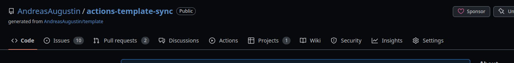

GitHub actions-template-sync
abstract
Sometimes we want to synchronise some git repositories. In general this is not a huge task using commands like
git checkout -b "${NEW_BRANCH}"
git pull "${SOURCE_REPO}" --allow-unrelated-histories
in the target repository. Often there are many repositories you want to synchronize. E.q. you have created your repositories using a GitHub template repository. Click the links to get some more information about how to create and use template repositories. When you are making changes within the template repository often like to propagate those changes into the repositories created from the template. To automate this task I created a Github action acions-template-sync Instead of looping through all repositories and execute the commands listed above you can configure the actions-template-sync and receive automatically Pull requests within the target repositories.
Remarks
- It is possible to use this github action even if the source repository is not a template repository.
- If you are interested in the source code, please checkout the source code repository. Contributions of any kind are welcome.
Usage
The usage is designed to be simple. Just put a actions_templae_sync.yaml definition file into your .github/workflows/ folder.
Please click the following link if you want to get further information about GitHub Actions.
The content of the file should look like the following
name: actions-template-sync
on:
# cronjob trigger At 00:00 on day-of-month 1. https://crontab.guru/every-month
schedule:
- cron: "0 0 1 * *"
# manual trigger
workflow_dispatch:
jobs:
repo-sync:
runs-on: ubuntu-latest
steps:
# To use this repository's private action, you must check out the repository
- name: Checkout
uses: actions/checkout@v3
- name: actions-template-sync
uses: AndreasAugustin/actions-template-sync@<replace_with_latest_version>
with:
github_token: ${{ secrets.GITHUB_TOKEN }}
source_repo_path: <replace_with_source_repo_path>
upstream_branch: main # defaults to main
Please replace the following variables
| Variable | replace with |
|---|---|
<replace_with_latest_version> |
replace with the latest release version |
<replace_with_source_repo_path> |
replace with the path of the source repository (without the hostname) |
This is a base configuration used for public github.com repositories. Also private and github enterprise servers are supported.
Please have a look into the available configuration paraemters
Authentication and authorization
Currently with a public repository as a source you do not need to do any changes and the example works out of the box. For a private source repository currently follwoing AUTHN/AUTHZ methods are supported
SSH
SSH is supported. Here you can find an example for the setup.
SSH keygen
First you need to create an ssh key. Just use the ssh-keygen command. Important do set a password.
Private Key
Add the private key as a secret into the target repository, e.q. with the name SOURCE_REPO_SSH_PRIVATE_KEY.
- click settings within the target repo

- select Secrets -> Actions
- click New repository secret
- name the secret (e.q. SOURCE_REPO_SSH_PRIVATE_KEY) and paste the private ssh key
Public key
Add the public key as a deployment key into the source repository.
- click settings within the source repository

- click deploy keys
- click add deploy key
- Give it a meaningful name. No need to add write permissions. Paste here your public ssh key
Prepare the action
Now you need to prepare the action. Edit/create the github action config the following way
As a best practice it is recommended that also the source_repo_path is used in a secret. Create a secret like you have done before.
jobs:
repo-sync:
runs-on: ubuntu-latest
steps:
# To use this repository's private action, you must check out the repository
- name: Checkout
uses: actions/checkout@v3
- name: actions-template-sync
uses: AndreasAugustin/actions-template-sync@<replace_with_latest_version>
with:
github_token: ${{ secrets.GITHUB_TOKEN }}
source_repo_path: ${{ secrets.SOURCE_REPO_PATH }} # <owner/repo>, should be within secrets
source_repo_ssh_private_key: ${{ secrets.SOURCE_REPO_SSH_PRIVATE_KEY }} # contains the private ssh key of the private repository